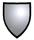
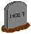
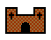
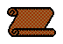
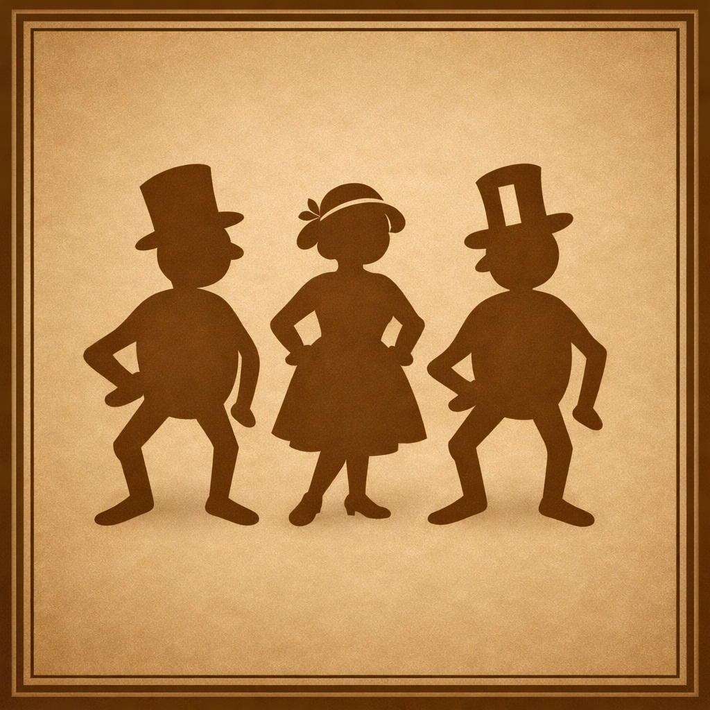

Annals
Annals presents the core record of the Holt and Holte families, gathering the materials that define identity across the centuries. These pages bring together pedigrees, heraldry, houses, mottos, biographies, family tales, and DNA evidence, creating a unified view of lineage, character, and continuity. It is the central reference point for the people, symbols, and stories that shaped each branch of the family, combining documented descent with the narratives and visual traditions that give the name its depth and texture.

A pedigree is a recorded line of descent which denotes family succession,
usually through the male line. Various Holt family genealogical tables
have been recorded. The search for blue blood, a famous ancestor, noble
or royal lineage is popular and some of the recorded details are here.
A recollection of the past, folklore or fictitious narratives of events
in the past such as forbidden love and witchcraft are plentiful. Also
Songs, Sonnets and Poems. For the Holts…


Monumental Inscriptions are immensely valuable to family historians
as a source of information. Church and cemetery grave headstones
show family relationships and family members are often laid to rest
in the same plots. Gravestones can date back to Norman times
inside the church, whilst gravestones outside can still be
read from the 1500s.

Estates and landed property for the Holt family can be seen all over Lancashire.
The architectural construction of the building is discussed, the setting,
the events that have been associated with it, the history of the
building and owners together with plans and pictures of the halls.
Heraldry is a special system of identification that was developed during the
Middle Ages to help distinguish fully armoured knights on the
battle and tournament field. The armorial decorations were displayed at
jousting tournaments overseen by heralds. The College of Arms manages
these heraldic markings. The arms were held by noble households.

It is not known the true origin of mottoes. The words of the motto
are usually emblazoned on an open scroll at the base of the heraldic shield.
The words may be in Latin, French, German or English and often refer to a
dramatic life event of the family and are of scriptural or proverbial nature.

The Biographies section brings together the lives of notable individuals connected with the Holt name, presenting
their roles, achievements, and documented impact on the communities in which they lived. Each profile is grounded
in verifiable historical sources, offering a clear and reliable account of their place within the wider story of the
parish and region.
The DNA section outlines how modern genetic testing can support traditional genealogical research by identifying
shared paternal and maternal lines among Holt descendants. It provides clear guidance on interpreting results and
understanding how DNA evidence complements documentary sources across the wider Holt family landscape.
The Parish Records section brings together baptisms, marriages, and burials that document the everyday lives of Holt
families across the region. These entries provide the essential chronological framework for tracing family lines,
linking individuals to specific places, and supporting wider genealogical conclusions drawn from other historical sources.
The Manorial Records section presents evidence from surveys, court rolls, rentals, and other seignorial documents
that name Holt tenants and landholders within the medieval and early‑modern manor. These records illuminate patterns
of landholding, inheritance, and local authority, offering a deeper understanding of how Holt families were embedded
in the social and economic structure of the parish.